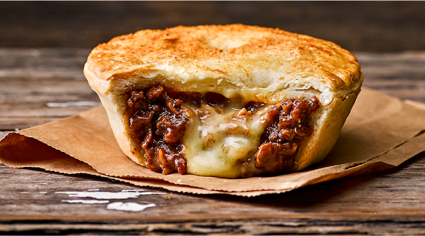
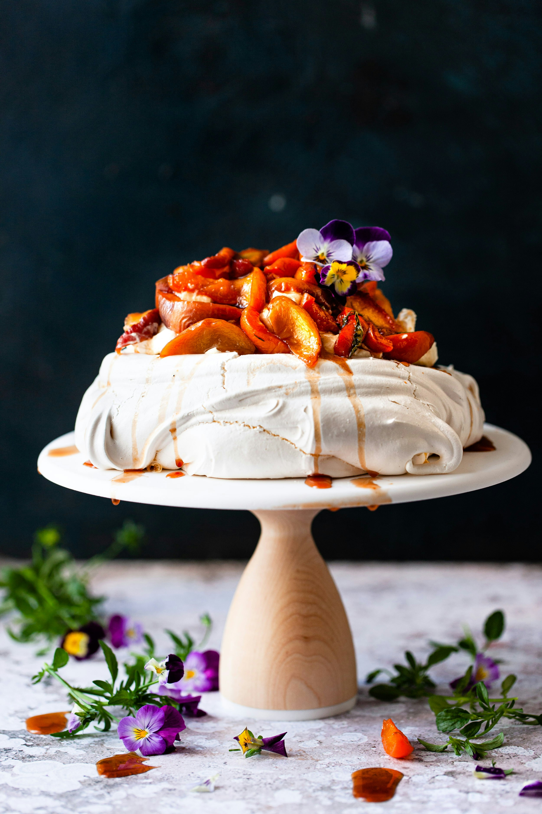
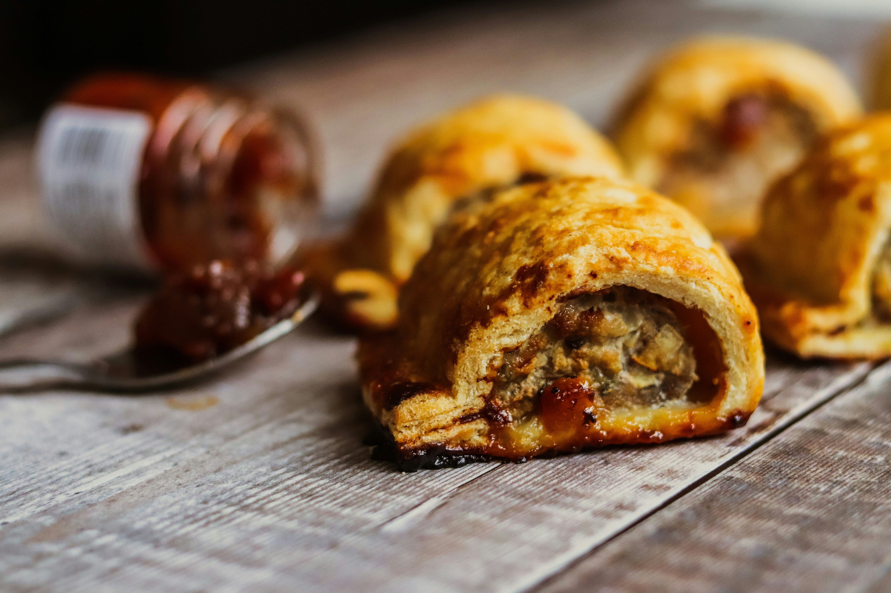
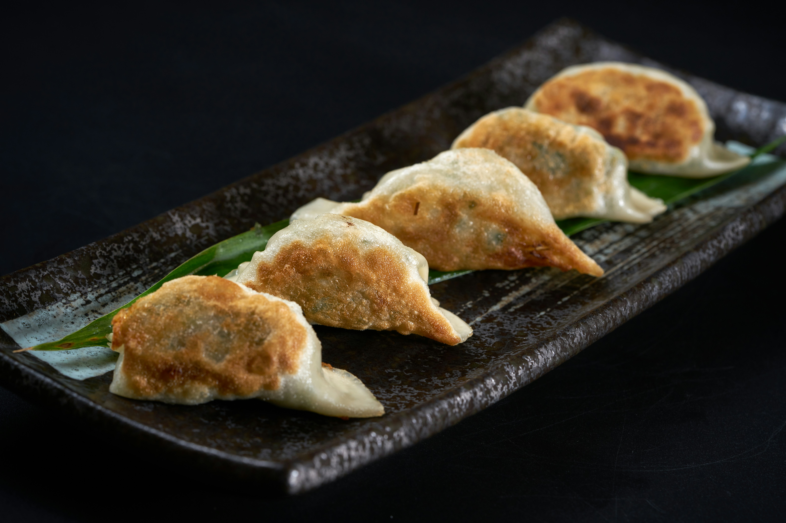
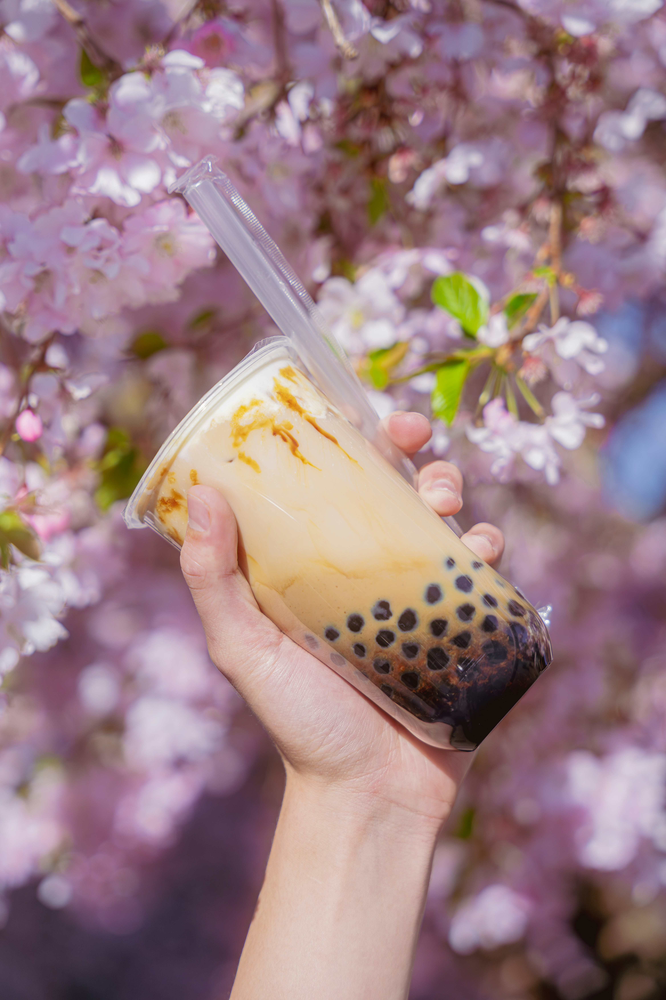
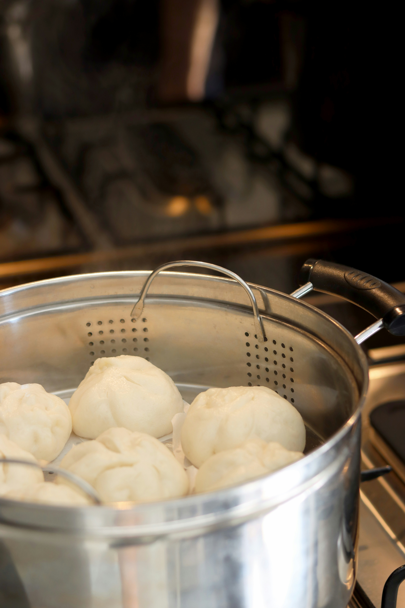

The Mince Pie
Every dairy in NZ has one sitting in a pie warmer. Mince and cheese is the classic but steak and cheese hits different. Its one of those things that just tastes like home.
Classic Kiwi staples and the Asian flavours my mates introduced me to. This is what growing up in New Zealand actually tastes like.
The stuff every NZ kid grew up with. Dairies, school canteens, Christmas dinner.

Every dairy in NZ has one sitting in a pie warmer. Mince and cheese is the classic but steak and cheese hits different. Its one of those things that just tastes like home.

Christmas isnt Christmas without a pav. Crispy on the outside, marshmallowy in the middle, topped with whipped cream and kiwifruit. Every family has their own version and everyone thinks theirs is the best.

Friday night tradition. Wrapped in paper, eaten on the beach or on the boot of the car. Salt, vinegar, and tomato sauce. Simple as.

School canteen staple. Grab one at half time at rugby. Get one from the dairy on the way home. Probably the most underrated food in the country.
Growing up with a lot of Asian mates means their food became part of my food story too. This stuff is just as Kiwi to me now.

First had these at a mates place when I was like 10. His mum made them from scratch and I ate way too many. Now I order them every time I see them on a menu.

Not the 50 cent packet kind. Proper ramen with a rich broth, soft egg, and chashu pork. Auckland has some really good ramen spots and my mates put me onto them.

Taro milk tea with pearls. I was sceptical the first time but now its a regular thing. Theres a place near school we go to pretty much every week.

Soft steamed buns stuffed with pork belly or crispy chicken. Found these through a mate and now I look for them on every menu. Simple but unreal.